Ham festival photograph 2007
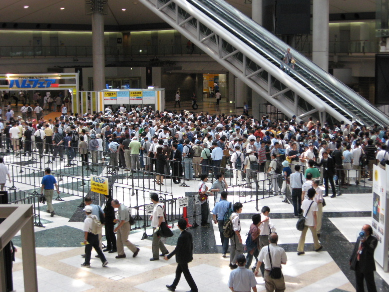
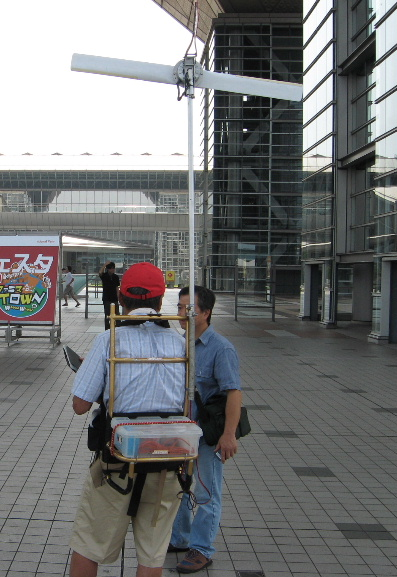
土曜日の午前中は詰め掛ける入場者で混乱/今年も居ました"風車発電おじさん?"
注目のK3が日本初登場！

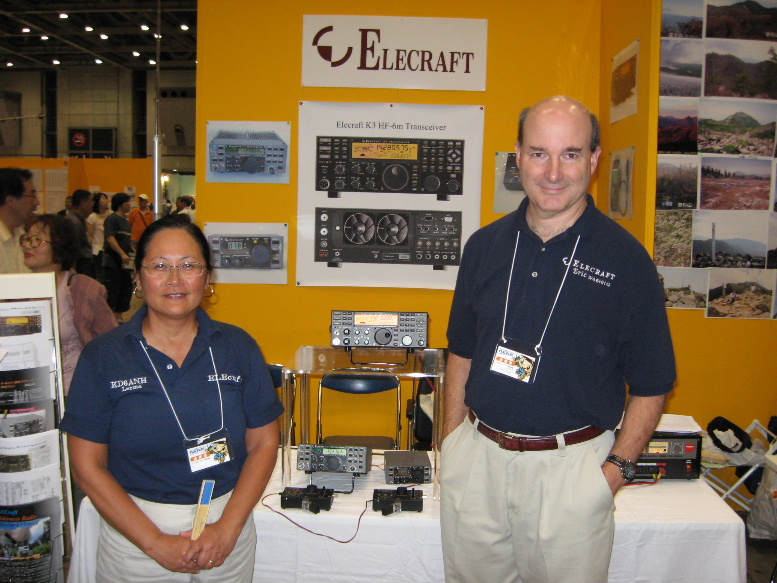
デイトンでも注目を集めた、HF-6mの高性能トランシーバー"K3"を持ち込んでPRに忙しい
米国・ELECRAFT社のEric・Swartz(WA6HHQ)社長
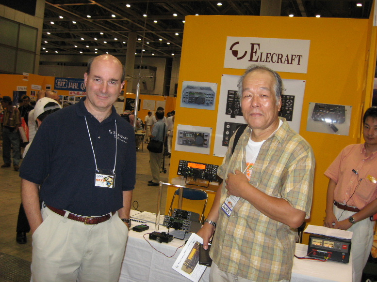
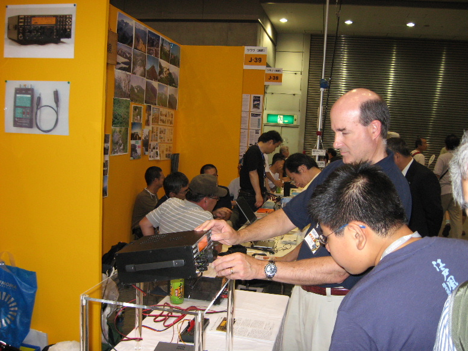
Eric・Swartz(WA6HHQ)氏とJA1RJU
クラブ・ビジネスブースは大盛況！
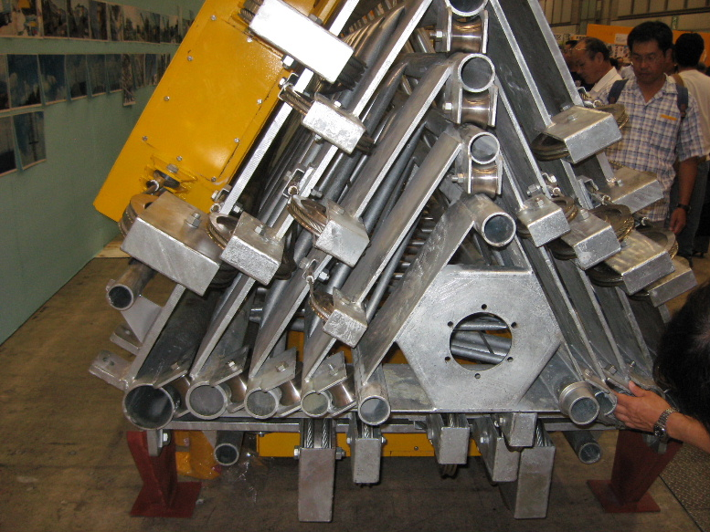
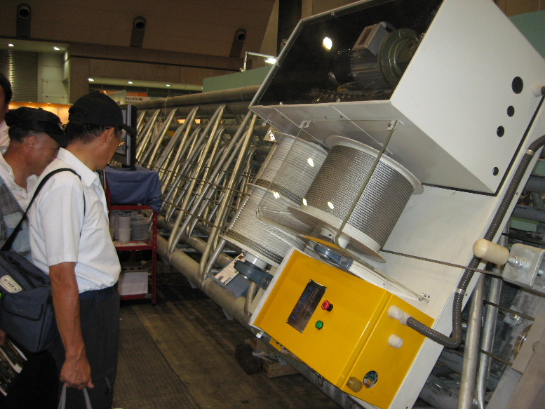
今年も大きさで目を引いたLUSOの51m高の巨大クランクアップタワー・BIG-51
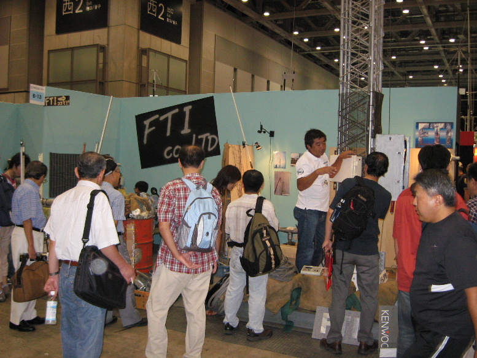
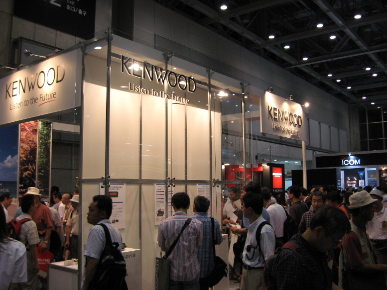
アンテナ工事でお馴染みのFTIのブース/Kenwoodのブース
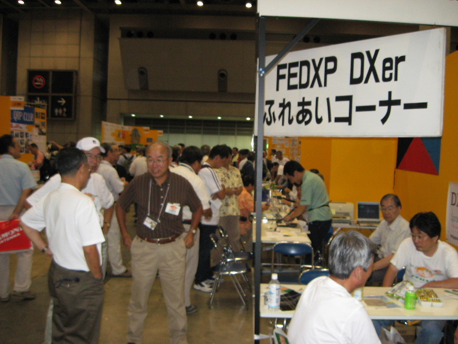
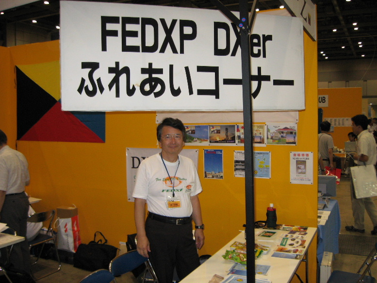
FEDXPの"ふれあいコーナー"/右はJA1BRK・米村氏
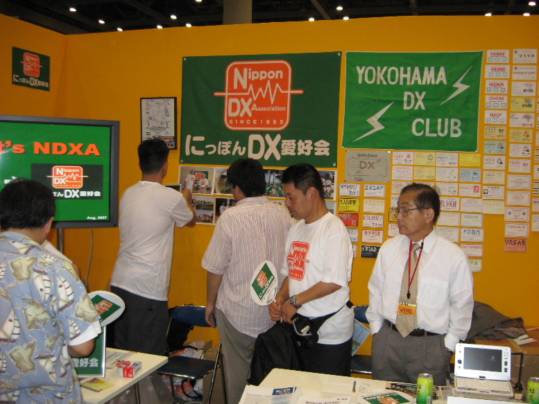
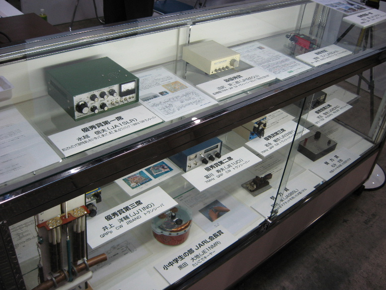
"なんちゃって"改め今年から「にっぽんDX愛好会(NDXA)」/JARL自作コーナー入賞作品
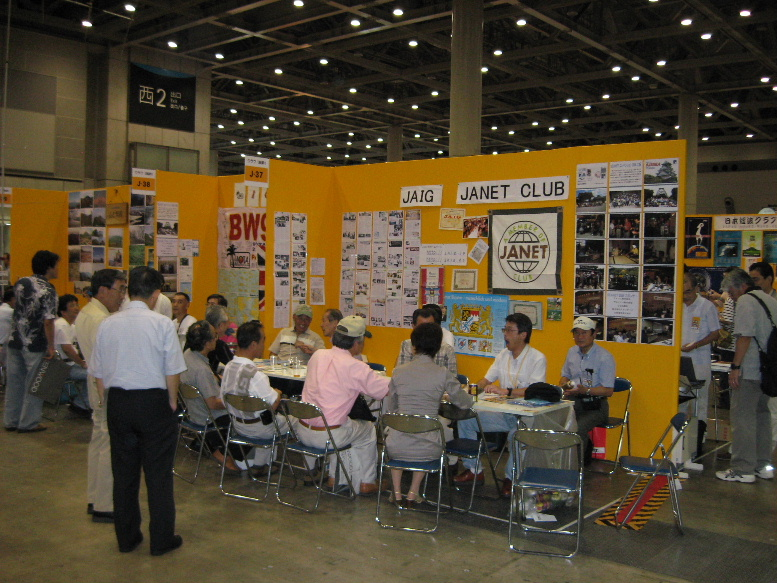
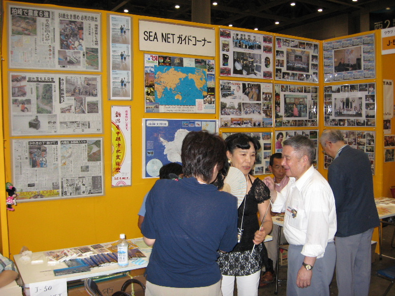
JANET(左)/SEANETのブース
"Project BIG-DISH" 8N1EMEの運用報告
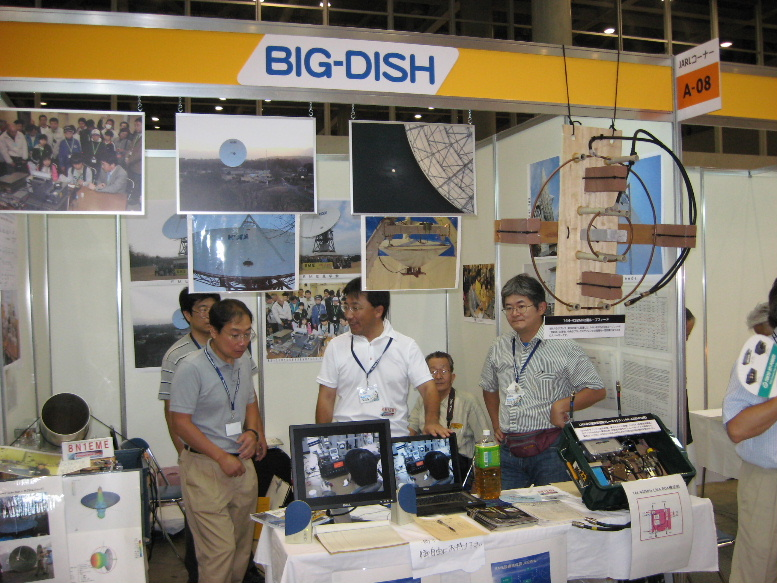
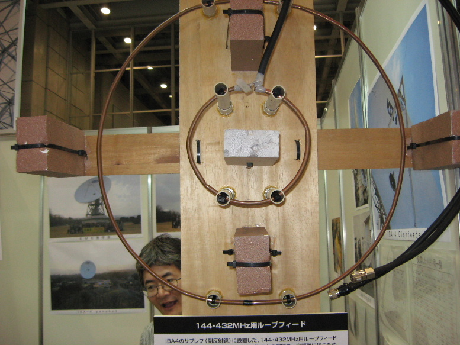
KDDI・IbarakiのBIG-DISHで8N1EMEを運用、活躍した"Project BIG-DISH"のOPの皆さん
右はIBA-4(32m)用に特別に製作された144/432MHｚの"給電(フィード)部"
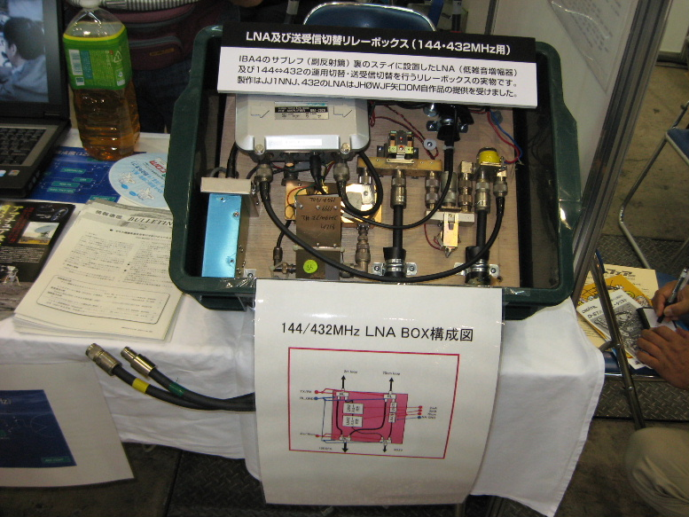
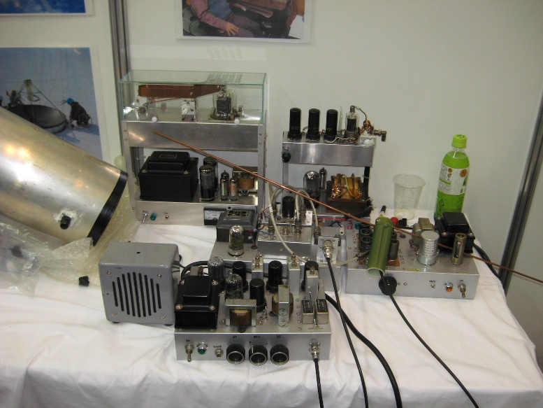
アンテナ切り替え用リレー回路/往年の真空管式"EMEセット"も展示
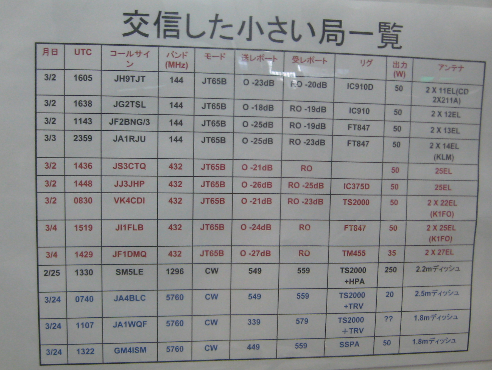
8N1EMEは144MHzで50Wにシングル八木のQRPでもQSOが可能だった。